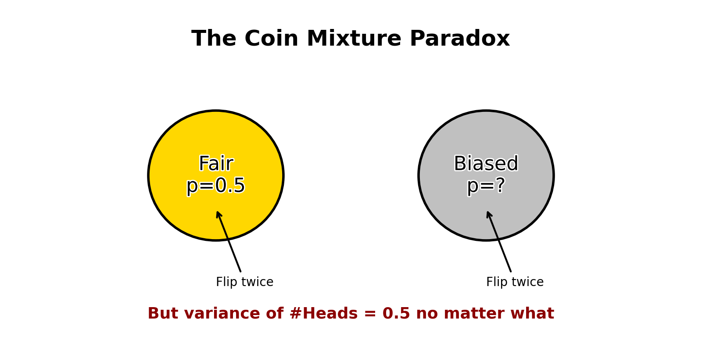

Introduction
Recently, in my stochastic processes discussion, we went over a coin-flipping problem. In my probability course, we’ve covered many coin-toss problems, but I found this particular problem especially interesting—so much so that it sent me down a rabbit hole trying to understand it. The problem went as follows:
Imagine you have two coins. One is perfectly fair (50% chance of heads), and the other is biased, with a 60% chance of heads. Visually, the coins are indistinguishable. We then flip the left coin twice (not knowing if it is fair or biased), thus what is the variance of the number of heads denoted by \(\text{Var}(\text{\# heads})\)?
Coin Flip Variance Solution
The solution goes as follows:
Let
\[
X = X_1 + X_2
\]
where \(X_1\) and \(X_2\) represent the results of the first and second coin flips, respectively (1 = heads, 0 = tails).
We want to compute: \[ \operatorname{Var}(X) = \operatorname{Var}(X_1 + X_2) \]
Using the identity: \[ \operatorname{Var}(X_1 + X_2) = \operatorname{Var}(X_1) + \operatorname{Var}(X_2) + 2 \cdot \operatorname{Cov}(X_1, X_2) \]
Note: The two coin flips are not independent, since flipping one head increases the likelihood that the coin is biased. Hence, we must account for covariance.
Step 1: Compute \(\operatorname{Var}(X_1)\)
\[ \operatorname{Var}(X_1) = \mathbb{E}[X_1^2] - (\mathbb{E}[X_1])^2 \]
Since \(X_1 \in \{0, 1\}\) (Bernoulli random variable), \(X_1^2 = X_1\), so: \[ \mathbb{E}[X_1^2] = \mathbb{E}[X_1] \]
We compute \(\mathbb{E}[X_1]\) using the law of total expectation: \[ \mathbb{E}[X_1] = \mathbb{P}(\text{Heads}) = \frac{1}{2}(0.5) + \frac{1}{2}(0.6) = 0.55 \]
\[ \operatorname{Var}(X_1) = 0.55 - (0.55)^2 = 0.55 - 0.3025 = 0.2475 \]
By symmetry: \[ \operatorname{Var}(X_2) = \operatorname{Var}(X_1) = 0.2475 \]
Step 2: Compute \(\operatorname{Cov}(X_1, X_2)\)
We use: \[ \operatorname{Cov}(X_1, X_2) = \mathbb{E}[X_1 X_2] - \mathbb{E}[X_1]\mathbb{E}[X_2] \]
Compute \(\mathbb{E}[X_1 X_2]\)
This is the probability that both flips are heads: \[ \mathbb{P}(\text{both H}) = \mathbb{P}(\text{both H} \mid \text{fair}) \cdot \mathbb{P}(\text{fair}) + \mathbb{P}(\text{both H} \mid \text{biased}) \cdot \mathbb{P}(\text{biased}) \]
\[ = (0.5)(0.5)^2 + (0.5)(0.6)^2 = 0.5(0.25) + 0.5(0.36) = 0.125 + 0.18 = 0.305 \]
Compute \(\mathbb{E}[X_1]\mathbb{E}[X_2]\)
\[ = (0.55)^2 = 0.3025 \]
So, \[ \operatorname{Cov}(X_1, X_2) = 0.305 - 0.3025 = 0.0025 \]
Final Step: Combine All
\[ \operatorname{Var}(X) = \operatorname{Var}(X_1) + \operatorname{Var}(X_2) + 2 \cdot \operatorname{Cov}(X_1, X_2) \]
\[ = 0.2475 + 0.2475 + 2(0.0025) = 0.495 + 0.005 = \boxed{0.5} \]
Interpretting Our Answer
I don’t know about you, but I found it hard to believe that the answer was actually 1/2.
For example, we know:
- A fair coin (p=0.5) flipped twice has variance 0.5
- A biased coin (p=0.6) flipped twice has variance 0.48
- We have a 50/50 chance of using either coin
We can also graph the relationship of variance to probability of heads:
So, kind of like a magic trick, how is it possible that with a biased coin, our variance is the same as if we flipped two fair coins?
The answer is actually in the wording of the problem. By adding the uncertainty about which coin we’re using (we picked the left coin not knowing whether it’s fair or biased), we perfectly compensate for the reduced variance of the biased coin. On top of that, it wouldn’t matter whether the probability of heads was 0.6 or 0.7 or 0.8. For any probability of heads for the biased coin, our variance of heads for the two coin flips will always be 0.5.
It was at this point that I left the discussion knowing the answer to the paradox, however, I still wasn’t fully convinced. Thus, as any curious mathematician would do, I sought to understand why our solution works the way it does by generalizing the problem.
Generalizing the Problem
Imagine you have two coins. One is perfectly fair (50% chance of heads), and the other is biased, but you don’t necessarily know its exact bias – just that it has some probability p of landing heads.
Now, consider this experiment:
- You randomly pick one of the two coins (with equal probability, 0.5 each).
- You flip the chosen coin twice.
- You count the total number of heads, let’s call this Y.
Let’s define our variables more formally:
- \(C\): The random variable representing the chosen coin.
- \(C = F\) (Fair coin) with \(P(C=F) = 0.5\)
- \(C = B\) (Biased coin) with \(P(C=B) = 0.5\)
- Probabilities of Heads:
- \(P(\text{Heads} | C=F) = p_F = 0.5\)
- \(P(\text{Heads} | C=B) = p_B = p\) (where \(0 \leq p \leq 1\))
- \(X_1, X_2\): The outcomes of the two flips (1 for heads, 0 for tails). These are Bernoulli trials given the chosen coin.
- \(Y\): The total number of heads in the two flips. \(Y = X_1 + X_2\). Given the coin, \(Y\) follows a Binomial distribution \(\text{Bin}(n=2, \text{probability}=p_C)\).
Our goal is to calculate \(\text{Var}(Y)\), the variance of the total number of heads before we know which coin was chosen.
Explaining the Constant Variance
The key to understanding this result lies in the Law of Total Variance (also known as Eve’s Law). For random variables \(Y\) and \(C\), it states:
\[\text{Var}(Y) = E[\text{Var}(Y | C)] + \text{Var}(E[Y | C])\]
Let’s break this down:
\(E[\text{Var}(Y | C)]\): The expected value of the conditional variance. This is the average variance within each coin type. We calculate the variance of \(Y\) assuming we know which coin was picked (\(\text{Var}(Y | C=F)\) and \(\text{Var}(Y | C=B)\)) and then find the weighted average of these variances based on the probability of picking each coin.
\(\text{Var}(E[Y | C])\): The variance of the conditional expectation. This measures the variability between the average outcomes of the different coin types. We calculate the expected value of \(Y\) assuming we know which coin was picked (\(E[Y | C=F]\) and \(E[Y | C=B]\)) and then find the variance of these expected values, treating \(E[Y | C]\) itself as a random variable that depends on \(C\).
Let’s calculate each term.
Step 1: Conditional Expectations and Variances
First, let’s find the expected value and variance of \(Y\), conditional on knowing which coin was chosen.
- Given the Fair Coin (\(C=F\)):
- The number of heads \(Y\) follows \(\text{Bin}(n=2, p=0.5)\).
- \(E[Y | C=F] = n \cdot p_F = 2 \times 0.5 = 1\)
- \(\text{Var}(Y | C=F) = n \cdot p_F \cdot (1 - p_F) = 2 \cdot 0.5 \cdot (1 - 0.5) = 2 \cdot 0.5 \times 0.5 = 0.5\)
- Given the Biased Coin (\(C=B\)):
- The number of heads \(Y\) follows \(\text{Bin}(n=2, p=p)\).
- \(E[Y | C=B] = n \cdot p_B = 2 \times p\)
- \(\text{Var}(Y | C=B) = n \cdot p_B \cdot (1 - p_B) = 2 \cdot p \times (1 - p) = 2p(1-p)\)
Step 2: Calculate \(E[\text{Var}(Y | C)]\)
This is the average of the conditional variances, weighted by the probability of choosing each coin:
\[E[\text{Var}(Y | C)] = \text{Var}(Y | C=F) \cdot P(C=F) + \text{Var}(Y | C=B) \cdot P(C=B)\]
\[E[\text{Var}(Y | C)] = (0.5) \cdot (0.5) + (2p(1-p)) \cdot (0.5)\]
\[E[\text{Var}(Y | C)] = 0.25 + p(1-p)\]
\[E[\text{Var}(Y | C)] = 0.25 + p - p^2\]
Step 3: Calculate \(\text{Var}(E[Y | C])\)
This is the variance of the conditional means. We have a random variable \(E[Y | C]\) which takes the value \(E[Y | C=F] = 1\) with probability 0.5, and the value \(E[Y | C=B] = 2p\) with probability 0.5.
To find its variance, we use \(\text{Var}(X) = E[X^2] - (E[X])^2\).
First, find the mean \(E[E[Y | C]]\):
\[E[E[Y | C]] = E[Y | C=F] \cdot P(C=F) + E[Y | C=B] \cdot P(C=B)\]
\[E[E[Y | C]] = (1) \cdot (0.5) + (2p) \cdot (0.5)\]
\[E[E[Y | C]] = 0.5 + p\]
(Note: By the law of total expectation, this is also \(E[Y]\)).
Next, find the expected value of the square \(E[(E[Y | C])^2]\):
\[E[(E[Y | C])^2] = (E[Y | C=F])^2 \cdot P(C=F) + (E[Y | C=B])^2 \cdot P(C=B)\]
\[E[(E[Y | C])^2] = (1)^2 \cdot (0.5) + (2p)^2 \cdot (0.5)\]
\[E[(E[Y | C])^2] = 1 \cdot 0.5 + 4p^2 \cdot 0.5\]
\[E[(E[Y | C])^2] = 0.5 + 2p^2\]
Now, calculate the variance:
\[\text{Var}(E[Y | C]) = E[(E[Y | C])^2] - (E[E[Y | C]])^2\]
\[\text{Var}(E[Y | C]) = (0.5 + 2p^2) - (0.5 + p)^2\]
\[\text{Var}(E[Y | C]) = 0.5 + 2p^2 - (0.25 + p + p^2)\]
\[\text{Var}(E[Y | C]) = 0.5 + 2p^2 - 0.25 - p - p^2\]
\[\text{Var}(E[Y | C]) = 0.25 - p + p^2\]
Step 4: Combine the Terms
Now we add the two components according to the Law of Total Variance:
\[\text{Var}(Y) = E[\text{Var}(Y | C)] + \text{Var}(E[Y | C])\]
\[\text{Var}(Y) = (0.25 + p - p^2) + (0.25 - p + p^2)\]
Notice how the terms involving \(p\) and \(p^2\) cancel out!
\[\text{Var}(Y) = 0.25 + 0.25 + (p - p) + (-p^2 + p^2)\]
\[\text{Var}(Y) = 0.5\]
The variance \(\text{Var}(Y)\) is indeed \(0.5\), regardless of the value of \(p\).
Intuition: Why Does \(p\) Cancel Out?
The cancellation happens because the two components of the total variance move in opposite directions as the bias \(p\) changes:
Average Within-Coin Variance (\(E[\text{Var}(Y | C)] = 0.25 + p(1-p)\)): This term represents the inherent randomness within each coin type. The variance of a single Bernoulli or Binomial trial is maximized when \(p=0.5\). So, as the biased coin’s \(p\) moves away from 0.5 (towards 0 or 1), its individual variance \(2p(1-p)\) decreases. This makes the average variance term smaller when \(p\) is far from 0.5.
Variance Between Coin Averages (\(\text{Var}(E[Y | C]) = 0.25 - p + p^2\)): This term represents how different the average outcomes are for the two coins. The expected values are \(E[Y|C=F]=1\) and \(E[Y|C=B]=2p\). When \(p=0.5\), both expectations are 1, so there’s no variance between them (\(\text{Var}(E[Y|C]) = 0.25 - 0.5 + 0.25 = 0\)). As \(p\) moves away from 0.5, the difference between the average outcomes (1 and 2p) increases, leading to a larger variance between the conditional expectations.
These two effects perfectly offset each other. As the bias \(p\) makes one term smaller, it makes the other term larger by exactly the same amount, keeping their sum constant at 0.5.
Conclusion
The constant variance of 0.5 in this coin mixture problem is a fascinating result that stems directly from the Law of Total Variance. While it seems paradoxical that the overall variability doesn’t depend on the specific bias \(p\) of the second coin, the mathematical breakdown shows a perfect cancellation effect. The average variance within the coin types and the variance between the coin types’ average outcomes compensate for each other precisely.
This example highlights how decomposing variance can reveal underlying structures and sometimes lead to surprising, constant results even when parameters within the mixture model are changing. It also serves as a reminder that our intuition about how probability distributions combine can sometimes be misleading!